Ideal mating in the target frame; STL and convex-hull sections at target z=0. Tool solids projected into that plane (interface tilt is under 0.002 deg). Original global 3-D link7 distance -0.292936604 mm; 20 mm candidate gives about +19.707063 mm. These query distances are not inferred from the 2-D section. Inset magnifies the depth coordinate. New 9.8 mm spacer and 10 mm pad use a rigid circular-seat simulation assumption, not approved hardware. Old/new main panels use identical axes and original STL scale.PDF
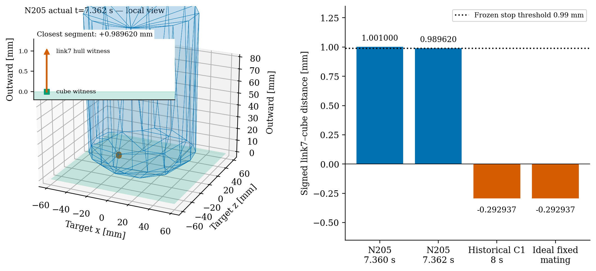
Left: N205 actual 7.362 s saved state; supplied STL surface triangles, target face and geometrically labelled closest points. Gap is positive +0.989619610 mm; no collision asserted. Right: actual N205 samples and separate historical/ideal static queries. Historical and ideal negative distances also have 29 triangle/box crossing witnesses; this is not solely convex-hull filling. Geometry is supplied collision STL, not certified CAD.PDF
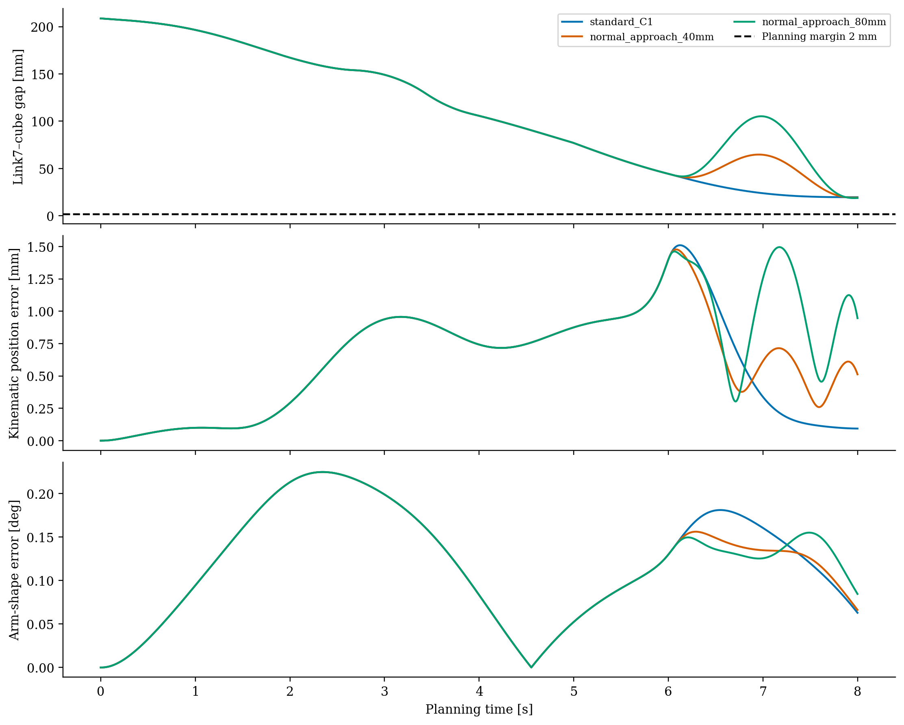
Three frozen references, all sampled over 0–8 s with added target/tool pairs in hard distance constraints. These are kinematic planning integrations, not true closed-loop dynamics. Same-path adaptive interval checks use 0.5 ms for standard C1 and 0.25 ms for other candidates near pad contact; no arbitrary perturbation guarantee. Standard C1 selected without reading postgrasp results.PDF
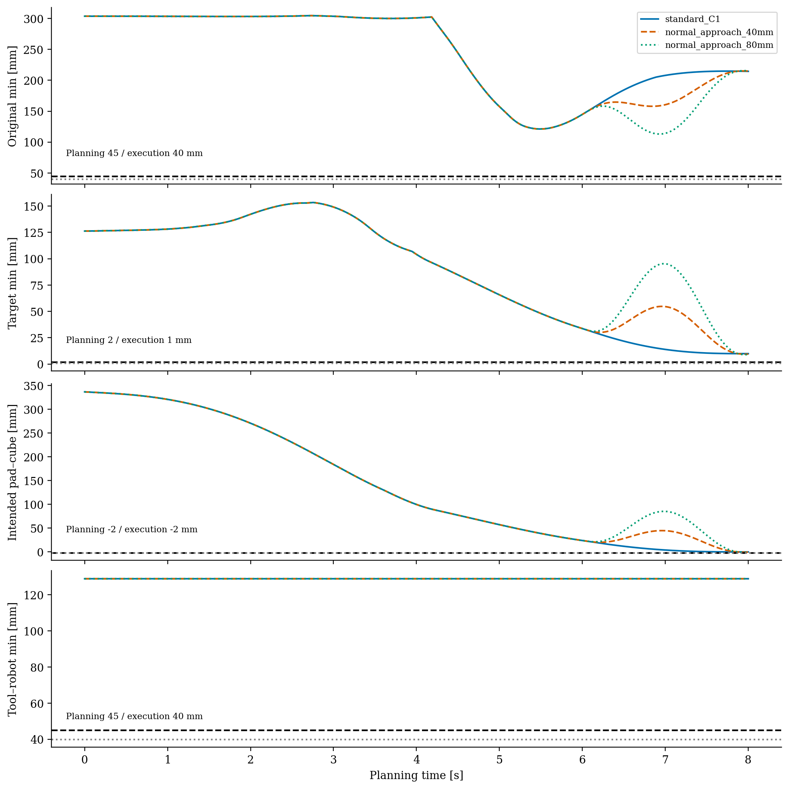
Pointwise minimum within each pair class for all frozen kinematic planning candidates: original 24 pairs, unintended target pairs, intended pad–cube and added tool–robot/obstacle pairs. No real closed-loop dynamics shown. Dashed black lines: planning gates; dotted grey: unchanged execution gates before numeric tolerance. Candidate curves overlap before 6 s. Per-pair conservative interpolation bounds and adaptive checks are in trajectory_screening.json. Stated tool simulation assumption only, not hardware verification.PDF
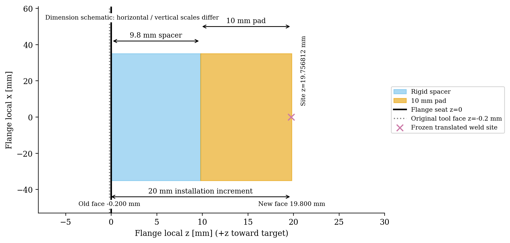
Simulation dimension drawing in the flange frame. Radius 35 mm; 9.8 mm positive-length spacer contiguous with the 10 mm pad; 20 mm is installation increment, not spacer thickness. Added aluminium-equivalent density 2700 kg/m³, total mass 0.205738 kg, explicit positive inertia. Entire circular rigid seat assumed; no bolt pattern, manufacturing CAD, strength or hardware approval. Target geometry and robot flange/link7 unchanged.PDF
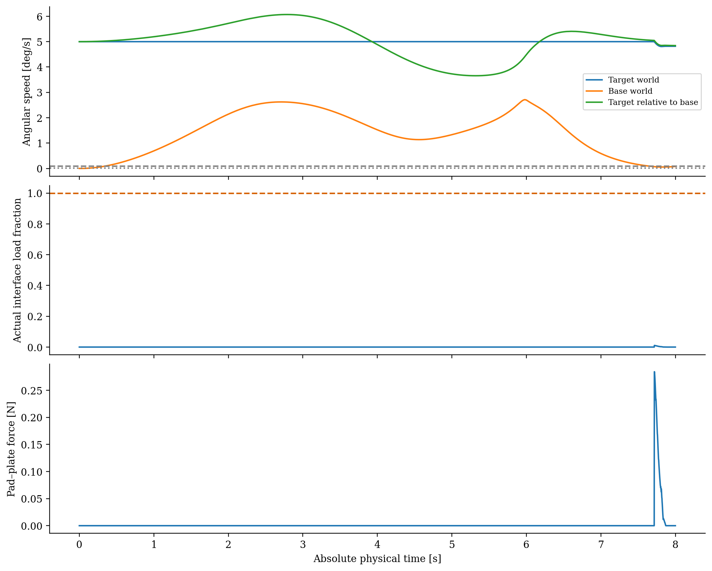
N206 nominal actual continuous dynamics through 8.000 s. [16,18] s NOT EVALUATED. Angular speed gates are fixed at 0.1 and 0.02 deg/s. Load fraction uses the actual physical wrench and original 50 N / 2 Nm envelope; no old postgrasp curves inherited.PDF
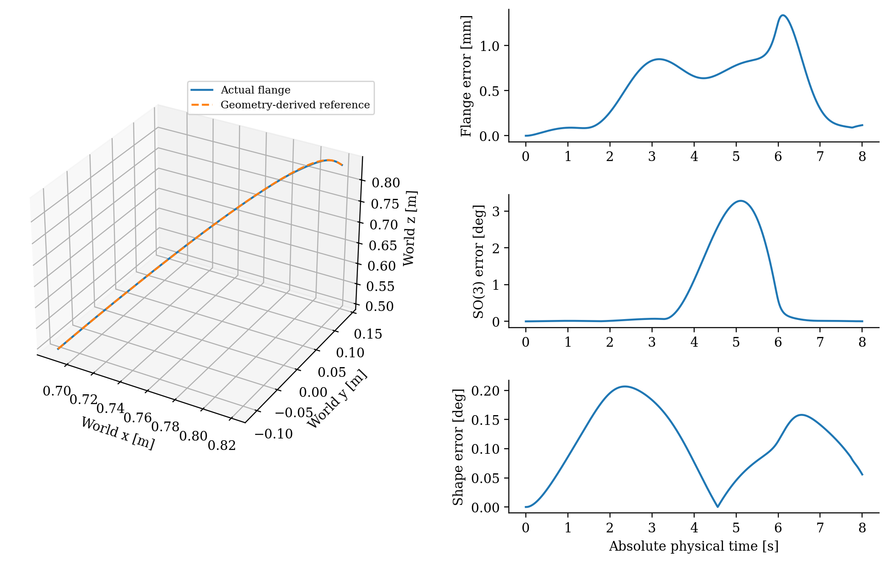
N206 actual flange path and approach tracking errors from home through min(8,8.000) s. Reference comes from new fixed flange–tool and target–grasp transforms; it does not fit an old actual terminal state. These errors are distinct from postgrasp holding errors.PDF
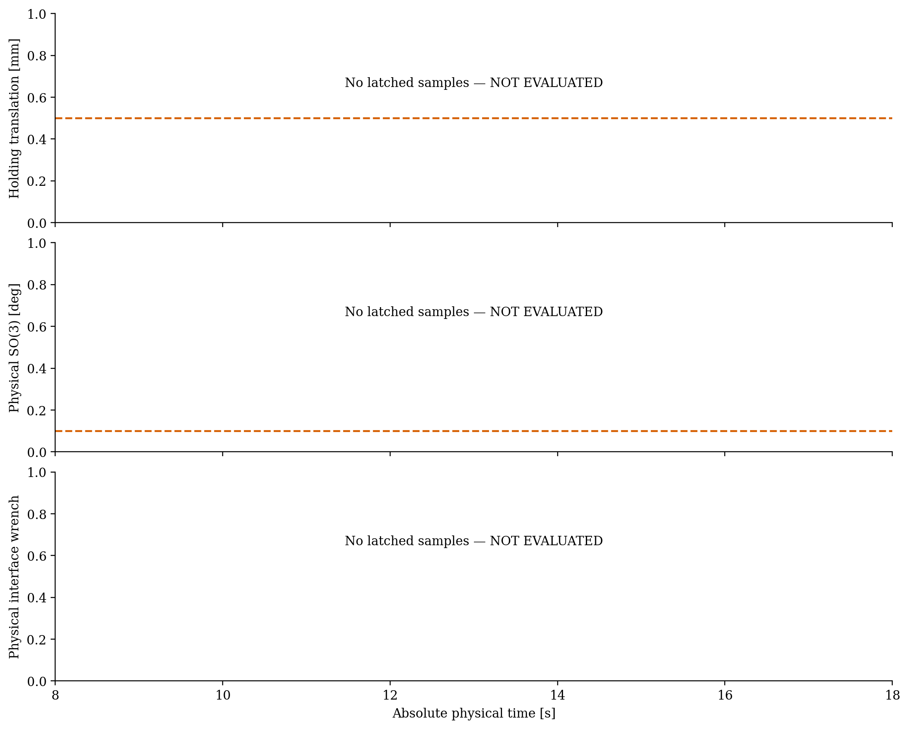
Only actual latched samples are plotted; nominal ended at 8.000 s. No holding curves fabricated for an unexecuted stage. Original 0.5 mm / 0.1 deg limits and physical wrench reference remain fixed.PDF
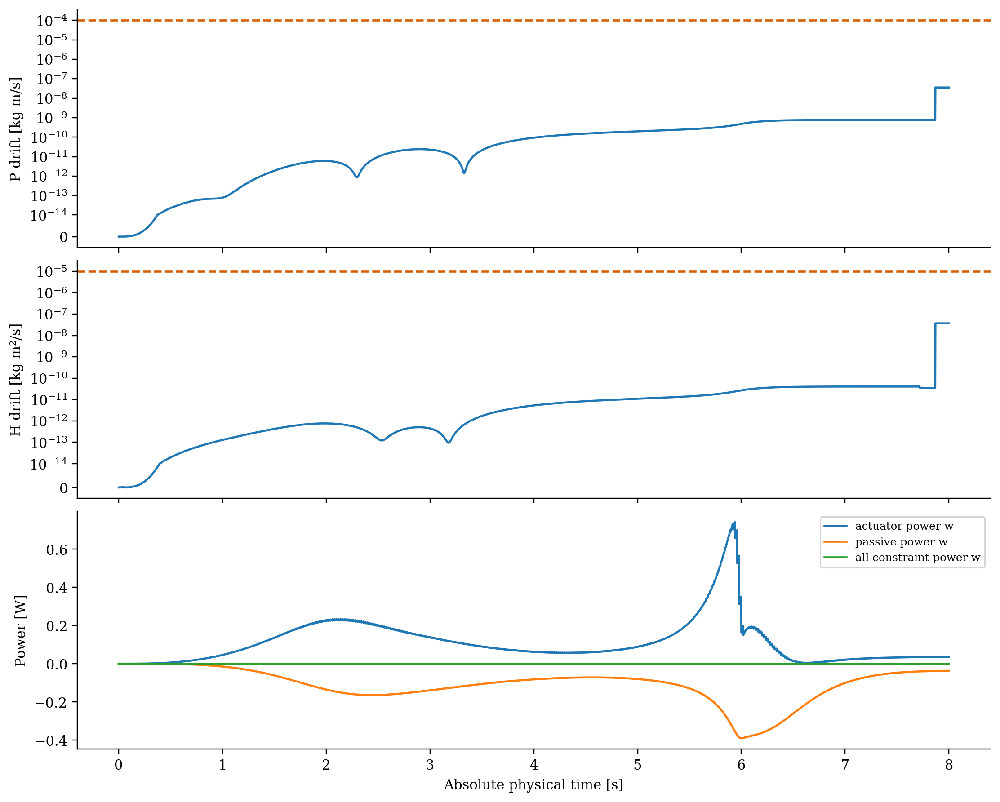
Whole physical robot + target system, referenced to actual t=0. The kinematically prescribed visualization marker is excluded from COM and locked-inertia accounting without altering the MuJoCo plant. Actuator, passive and constraint powers remain physical quantities.PDF
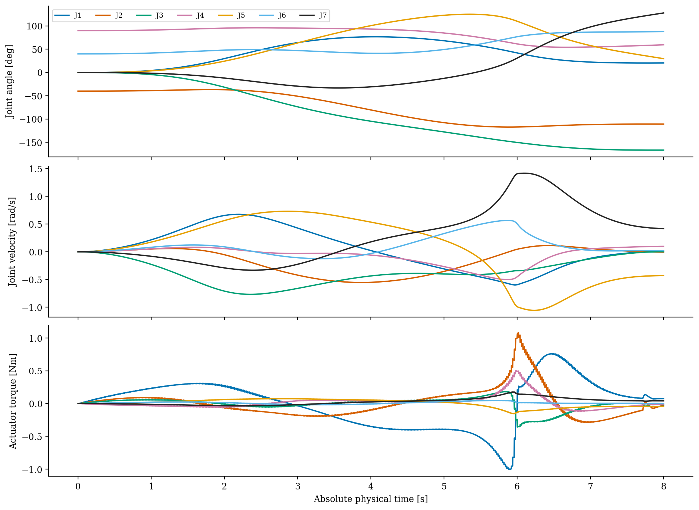
All seven driven joints during N206 actual nominal dynamics. Torque is measured actuator force in joint units; individual original limits are checked numerically in validation, with no retuning.PDF
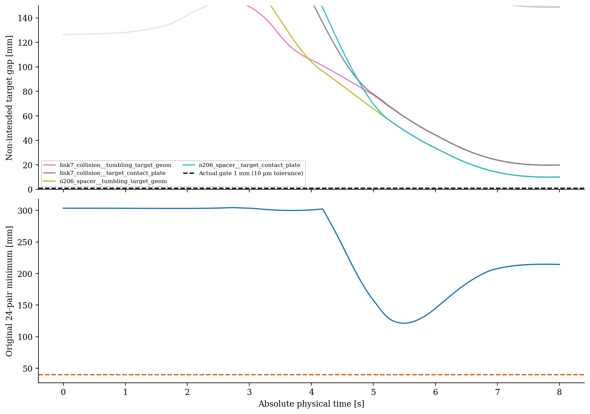
Actual N206 distances through 8.000 s. Link7 and spacer remain monitored during every phase. Original 24 pairs keep 40 mm execution / 45 mm planning margins; new target pairs use 1 mm execution / 2 mm planning. Pad–cube intended-face exception is recorded separately, never applied to link7 or spacer.PDF
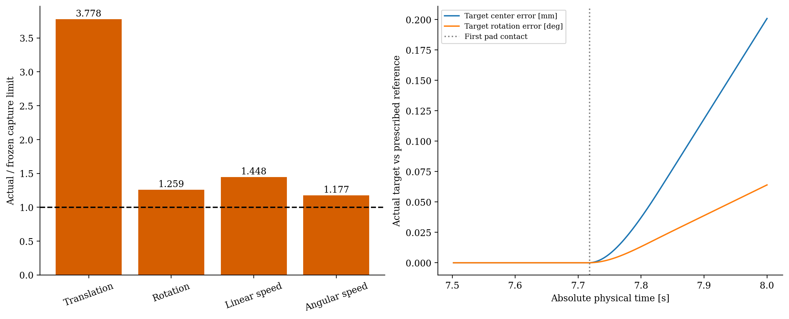
Actual t=8 capture metrics normalized by unchanged limits: 0.1 mm, 0.05 deg, 1 mm/s, 0.2 deg/s. All four fail and latch remains inactive. Right: real target divergence after first detected intended contact; mixed units explicitly labelled. Temporal sequence is evidence from the one actual trace, not a counterfactual causal experiment. No new reference or controller tuning followed.PDF
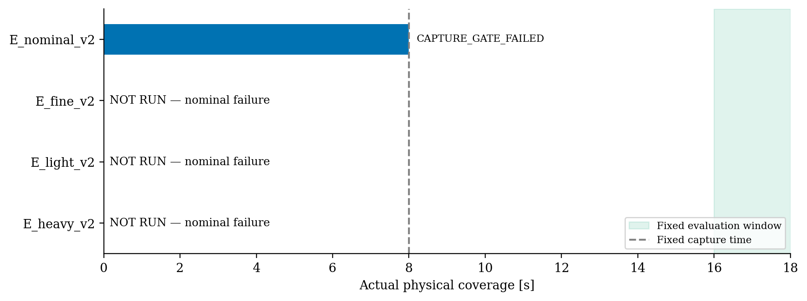
Only actual integrated duration is filled. Unexecuted fine/light/heavy cases are labelled NOT RUN and are not represented as zero-valued measurements. Capture time stays 8 s and final evaluation window stays [16,18] s, even when the nominal trajectory stops.PDF